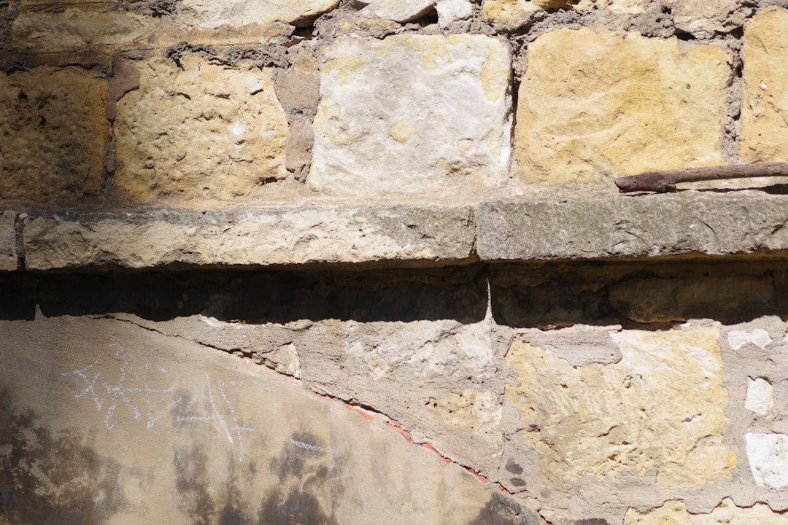

Adelaide waterproofing projects should be scoped around the leak source, the surface involved, and the written standard of work. The source page lists 11 service areas, from bathrooms and showers to balconies, basements, retaining walls and roof decks. It says wet-area work is completed to AS 3740, contractors hold the required South Australian building work contractor licence, inspections are free, and quotes should set out scope, price and warranty terms before work begins.
For Adelaide owners comparing waterproofing adelaide options, the useful starting point is not a product name, but the room, structure, leak path and evidence a contractor can inspect.
Waterproofing Adelaide Explained
Pro Waterproofing Adelaide presents the local work in practical categories: bathrooms, showers, balconies, basements, retaining walls, roof decks, external areas, membrane work, commercial properties and leak detection. For a homeowner or property manager, that list is useful because each category points to a different inspection question. A leaking shower may need diagnosis, membrane reinstatement or resealing. A balcony may require membrane repair or replacement. A basement or retaining wall may involve tanking, sump systems, hydrostatic pressure control, or positive-side and negative-side membrane systems.
Before asking for a quote, describe where water appears, what surface is above or beside it, and whether the area is tiled, concrete, below ground, exposed to weather, or part of a renovation. The published process starts with project details, then a site inspection, then a written quote. That order matters because waterproofing is rarely a reliable desktop assessment when the source is uncertain.
Who This Guide Applies To
This guide applies to Adelaide homeowners, unit owners, renovators, strata contacts, commercial property contacts and property managers who need a waterproofing issue assessed before repair or renovation work proceeds. It is especially relevant when the affected area is a wet area, balcony, basement, retaining wall, roof deck or external surface already named in the source page.
- Home renovators: ask how bathrooms, laundries and WC areas will be completed to AS 3740 where that standard applies.
- Apartment and strata contacts: separate balcony, basement car park and roof deck issues from internal shower or bathroom failures.
- Commercial and managed property contacts: request a clear written scope before committing to broader membrane maintenance or repair.
- Owners with unclear leaks: prioritise leak detection and moisture tracing before choosing a membrane system.
The same practical filter also helps when comparing a dedicated Adelaide waterproofing contractor guide with a provider's own service pages. Look for the same essentials each time: inspection, licence status, standards, written quote and warranty terms.
Adelaide Property Context That Changes The Brief
Local context should be used carefully. The source page names different property patterns across Adelaide, and those patterns are most useful when they change the inspection brief. In the CBD, the listed mix includes heritage terraces, modern apartments and commercial buildings, with demand spanning unit balconies, basement car parks and renovated wet areas in older stock. In Norwood and North Adelaide, heritage villas and terraces make careful wet-area renovation relevant. In Prospect and Fullarton, renovation activity can bring bathrooms, laundries and outdoor entertaining areas into the scope.
Coastal locations need a different conversation. The source page says Glenelg and Henley Beach face salt-laden air, wind and UV exposure, with balconies, terraces, roof decks and outdoor showers named as common focus areas. Foothills and established eastern suburbs bring their own context: Unley, Burnside, Magill and Campbelltown are described with clay soils, seasonal runoff, sloping sites, retaining walls, basements or underground spaces. Those details do not prove a diagnosis on their own, but they help an inspector ask better questions on site.
What A Written Quote Should Make Clear
The provider's published process says the contractor assesses the area, identifies the leak source, then gives a clear scope, price and warranty terms in writing. A useful quote should make the proposed work understandable to a non-specialist without hiding the decision points. For wet areas, ask what standard is being followed. For membranes, ask whether the work is installation, repair, replacement or reinstatement. For below-ground spaces, ask how the approach deals with water pressure and whether a sump system is part of the proposal.
Good quote inputs include photos, the affected room or surface, access limitations, visible staining, renovation timing, and whether the property is residential, commercial, strata or managed. If the work is part of a larger renovation, confirm the waterproofing sequence with other trades before demolition or tiling locks in the wrong order. If the leak source is uncertain, a quote that begins with investigation may be more useful than one that assumes the membrane location.
How To Compare Repair Paths
Not every job begins with a full replacement. The source page separates leak detection and repair, membrane repair and replacement, shower resealing, shower membrane reinstatement, and full waterproofing for bathrooms, laundries and WC areas. That distinction gives owners a way to compare the proposed path without pretending to diagnose the building themselves.
Use the table below as a neutral comparison tool. It does not replace inspection, but it can keep the conversation specific when two options sound similar. Ask the contractor to explain why the recommended path fits the surface, leak evidence and warranty terms. Where full membrane installation is proposed, the source page says it is backed by a written workmanship warranty from the contractor.
- Describe the project. Note the affected surface, visible water signs, property type and whether the work is repair, renovation or investigation.
- Arrange inspection. Use the site visit to identify the leak source rather than guessing from the visible damage alone.
- Request written scope. Ask for the proposed method, price, standard, warranty terms and sequence in writing before work starts.
- Compare the fit. Check whether the quote matches the surface, access, local exposure and level of investigation needed.
| Situation | Likely quote focus | Questions to ask |
|---|---|---|
| Leaking shower | Diagnosis, resealing or membrane reinstatement | What evidence points to the leak source, and is resealing enough? |
| Bathroom, laundry or WC renovation | Wet-area waterproofing to AS 3740 | How will the membrane work fit the renovation sequence? |
| Tiled or concrete balcony | Membrane repair or replacement | Is the issue localised, or does the surface need broader replacement? |
| Basement or retaining wall | Tanking, sump systems or pressure control | Is the proposed system positive-side, negative-side or another method? |
| Roof deck or terrace | Flat-roof or exposed membrane solution | How will exposure and surface use affect product selection? |
Common questions
Does every leak need full membrane replacement? No. The source page separates leak detection and repair, resealing, membrane reinstatement, repair and replacement. The right path depends on the inspected leak source and the affected surface.
What standard is named for domestic wet areas? The source page says bathroom, laundry and WC wet-area work is completed to AS 3740, the Australian Standard for waterproofing of domestic wet areas.
What should be confirmed before work begins? Confirm the contractor's licence status, inspection findings, written scope, price and warranty terms. The source page says these are addressed before work begins.
Which Adelaide properties need extra context in the brief? The source page names older inner suburbs, coastal areas, foothills blocks, apartments, commercial buildings and managed properties as contexts that can affect the waterproofing discussion.
This guide covers Adelaide waterproofing quote checks, inspection questions and service-path comparisons for wet areas, balconies, basements, retaining walls, roof decks and external surfaces.